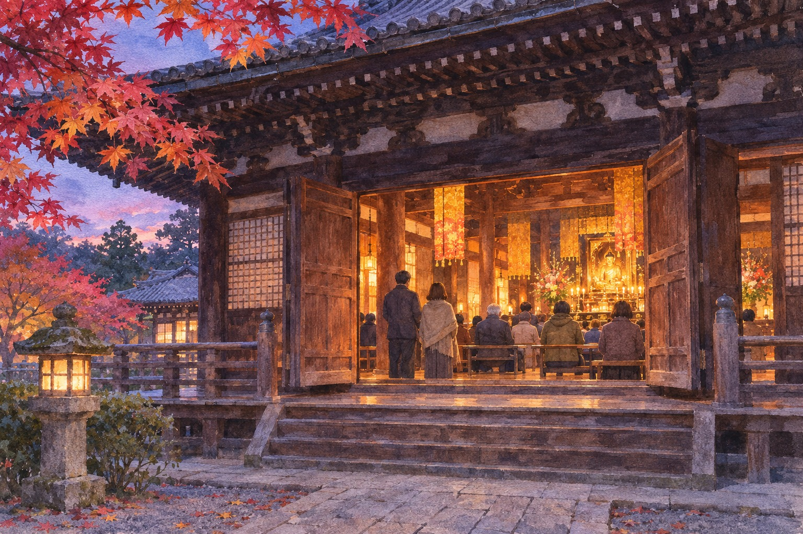

Kyoto · 5–15 November · evenings and one Sunday
The maples at Shinnyodō get the crowds. A week before them, the same hall hosts an eleven-day Buddhist service that Japan's other Pure Land temples copied, a team of eight bell-strikers, and a bowl of red-bean porridge handed out on the last day.
You have probably been to Shinnyodō for the maples, or been told to go. Late November, steep approach, a pagoda in the red trees. That is the temple's busiest stretch and it comes after what this piece is about. From 5 to 15 November the main hall holds a service called ojūya (お十夜, short for 十日十夜別時念仏会), and it is the reason a temple on a hill above Okazaki matters to Buddhist temples you will never visit.
Today is 6 November, so you can still catch it. The last day, Sunday 15 November, is the one to aim for.
The idea comes from a Buddhist text, the Sutra of Immeasurable Life: do good for ten days and ten nights in this troubled world and it outweighs a thousand years of good in the Buddha's pure land, where good comes easily. So a temple recites the nenbutsu, the chant to Amida Buddha, for ten days and ten nights. Shinnyodō's own count runs from 5 to 15 November, eleven days, starting with the opening of the sealed shrine and ending with its closing.
Nothing about it is quiet. It is not a hall of people sitting in silence. The chant is carried by the jūya-gane (十夜鉦), brass bells struck by a group of eight members of the temple's bell society. Kyoto City registered it as an intangible folk cultural property in 2013. Per the Agency for Cultural Affairs' database, they sit on both sides of the hall, strike bells of about 36 cm (one shaku and two sun) to a fixed set of 17 pieces, and almost all of those are played every day. Eight of the pieces carry the chant itself.

The story attached to Shinnyodō goes like this. In the 1430s, Ise Sadakuni (伊勢貞国), a senior retainer of the Ashikaga shōgun, was sick of the world and shut himself in the temple, planning to shave his head at dawn on the third day. A monk appeared in a dream and told him to wait. That day his elder brother fell from favour and was sent away, and Sadakuni was told to take over the family headship. He had avoided becoming a monk by one day, and gave thanks with seven more days and nights. Three plus seven is ten.
One careful local writer, who runs a fan site for the temple, points out that the temple's own picture-scroll history never uses the word "ten" or mentions the extra seven days. The ten-night story may have been added later, once the service had a sutra behind it. I find that more interesting than the legend, not less. Either way, the fan site gives the spread this way: in 1495 the ninth head priest of Kōmyō-ji (光明寺) in Kamakura lectured at the imperial court and was asked to hold the rite, and it went out from there to Pure Land temples across the country.
That is why it is worth knowing which temple you are in. Kamakura's Kōmyō-ji holds its own in October (sources give 12–14 or 12–25 October; check). Shinnyodō holds the original in November, one month behind the old calendar's tenth month. The fan site quotes the poet Takahama Kyoshi on this: the old rite ran from the 5th of the tenth month, and Shinnyodō, the temple most tied to it, still starts a month later. Ojūya is also a season word in haiku, and the site cites a Buson poem for it.
On the 15th, visitors are served red-bean porridge. The Agency for Cultural Affairs entry says it is given to guard against tare-komedome (たれこどめ). The fan site reads that as protection from losing control of the body after a stroke, and explains the logic: red beans were a winter vitamin source when there were no fresh vegetables, and their red colour was thought to ward off disaster. The fan site adds that the porridge began as the leftover red rice offered to the main image, shared with worshippers, and that the bowls it is served in are blessed, with characters standing for Amida on the base and the year's zodiac animal on the side.
I could not confirm what time it is served, how many portions there are, or whether you can keep a bowl. Ask:
At the reception desk, say: 十夜粥はいただけますか (jūyagayu wa itadakemasu ka). Then wait for a nod; do not start a queue on your own.
Ketsugan (結願) is the word on the signs: it means the vow is complete. The temple's official page for autumn 2026 says that on this day, the normal viewing is replaced by a special worship in front of the hidden Amida image, which is shown once a year. The fan site gives a day structure: the main image can be seen close up from about 9:00 to 16:00, a procession and grand service at 14:00, and the closing of the shrine at 17:00. Treat those times as last year's pattern and ask on the day, because the temple itself does not publish an hourly schedule.
I do not know whether the evening bells are open to anyone or whether you need a ticket for them. The only source for the 18:30 start is a fan site, written by a person who obviously knows the temple, but not the temple. If you want the bells, go at 17:30 and ask. The temple does not post an English schedule of its own. The 15th is a Sunday, and a Sunday in November at a famous Kyoto temple is not quiet. And there is a limit to what a chant can offer a visitor who does not follow the words: you get a sound, a hall, a pattern of strikes that speeds up toward a climax, and the knowledge that you are looking at the original of a service held in thousands of other halls.
Also: the maples are not out yet. The temple's autumn window, with the grounds charging an entry fee, starts on 18 November. If you want red leaves, this is the wrong week.
Aim for Sunday 15 November.